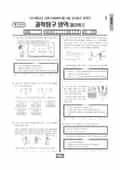

문제지

2023학년도 9월 모의평가 · 2022년 9월 시행
2023학년도 9모 과학탐구 물리학Ⅰ 1등급컷은 원점수 44점(추정), 표준점수 최고점은 73점입니다.
원점수 1등급컷은 공식 발표값이 아니라 EBSi·입시기관 값입니다. 등급별 값은 등급컷 표, 출처 구분은 데이터 원칙에 있습니다.

시험지를 먼저 풀어 보세요. 등급컷·표준점수·난이도는 흐리게 가려 뒀어요.
| 등급 | 원점수 | 표준점수 | 백분위 | 누적 |
|---|---|---|---|---|
| 1 | 44 | 68 | 96 | 4.99% |
| 2 | 39 | 64 | 88 | 12.7% |
| 3 | 32 | 58 | 75 | 27.31% |
| 4 | 26 | 52 | 60 | 40.98% |
| 5 | 17 | 45 | 38 | 65.2% |
| 6 | 13 | 41 | 24 | 77.98% |
| 7 | 9 | 38 | 10 | 92.74% |
| 8 | 7 | 36 | 4 | 96.45% |
등급별 컷 · EBSi 원점수 추정 · 만점 50점
정답 변경 없음
원문 표에서 이 과목 문항을 찾지 못했어요
시험 전체 관련 보도 4건은 2023학년도 9월 모의평가 회차 페이지에 모아 두었어요.
한국교육과정평가원이 교육부 보도자료로 공개한 표준점수 도수분포로 계산했습니다.
발행 기관: 한국교육과정평가원(KICE). 파일 위치: 이 사이트가 보관한 사본. 저작권은 발행 기관에 있습니다. 원본과 다르거나 게시 중단이 필요하면 연락처로 알려 주세요. 등급컷 출처 구분은 데이터 원칙에서 설명합니다.
막대 색은 역대 대비 난이도 · 진한 막대가 이 시험 · 막대를 누르면 그 회차로 이동
| 회차 | 1등급컷 | 표점 최고 | 1등급 표점 | 난이도 |
|---|---|---|---|---|
| 9모2023학년도이 시험 | 44 | 73 | 68 | 매우 어려움 |
| 6모2023학년도 | 48 | 67 | 66 | 쉬움 |
| 수능2022학년도 | 43 | 72 | 66 | 보통 |
| 9모2022학년도 | 47 | 70 | 68 | 보통 |
| 6모2022학년도 | 42 | 78 | 70 | 매우 어려움 |